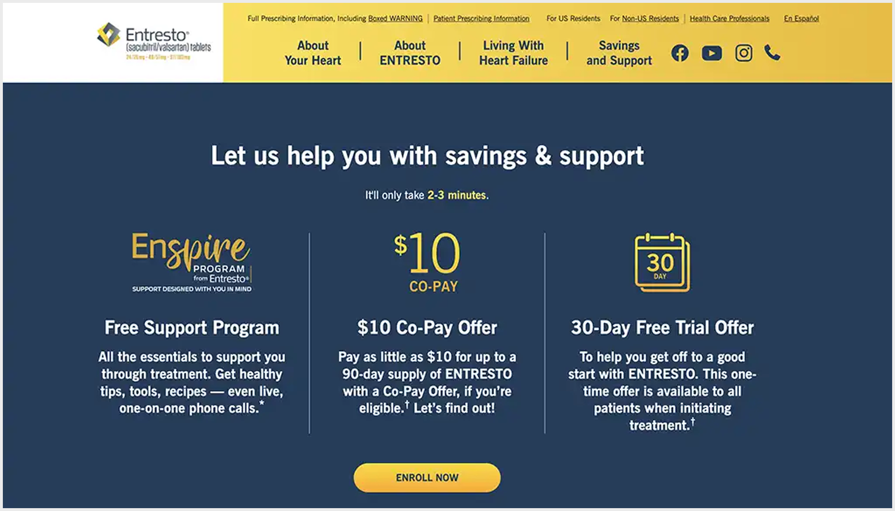
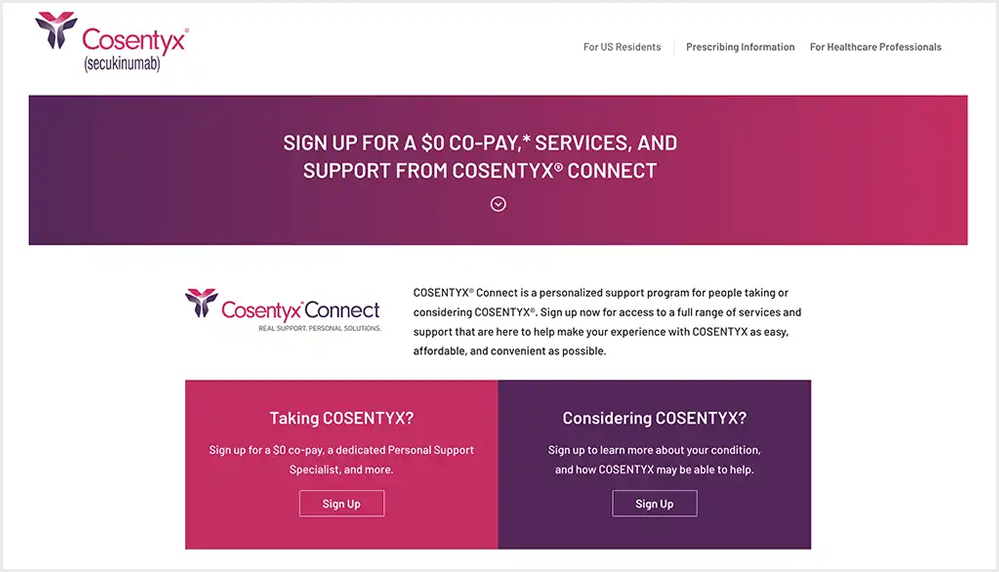

PSS Leap: Reimagining
Patient Support
Services.
A Flagship Initiative Within a $15B Pharma Segment Strategy
As product design and UX strategy lead for Novartis's US Pharma portfolio, I partnered with executive leadership to redefine how patients start and stay on therapy. PSS Leap replaced an outsourced, fragmented model with a fully integrated ecosystem — spanning patient web enrollment, Salesforce CRM workflows, omni-channel touchpoints, field team support, and end-to-end operational tooling for patient support teams.
Overview
A System-Level Reimagining of Patient Support
PSS Leap was Novartis's strategic initiative to bring patient support fully in-house — replacing a fragmented network of third-party vendors with a unified, technology-backed ecosystem built around the patient. The program spanned web enrollment portals, a Salesforce-powered Customer Engagement Center (CEC), real-time analytics dashboards, and omni-channel patient journeys across multiple therapeutic brands including Entresto and Cosentyx. Beyond the patient-facing experience, the work connected service design, CRM workflows, agent tooling, and operational reporting into one scalable support model — reducing administrative burden for CEC agents and field teams alike.
My role was to lead the CX/UX design strategy end-to-end: from patient and provider research through persona workshops, service blueprinting, and iterative design — to delivering validated, accessible, brand-configurable digital products at scale.

Identifying the Problem
Patients Are Falling Through the Cracks
PSS helps patients start and stay on treatment — but cumbersome enrollment and adherence processes were creating challenges for both patients and providers. Outdated systems, fragmented vendor services, and a lack of consumer focus resulted in inconsistent experiences that compromised the quality of care patients deserve.
A customer-first approach could fundamentally change patient outcomes.
By re-imagining the patient journey with a human-centered approach, we could simplify the complex system of portals and vendors providing financial and adherence support — built entirely in-house at Novartis.
Our Approach
Innovation and Excellence Through Iterative Design
To drive innovation and excellence by assembling a dedicated team and leveraging an iterative methodology. By continuously learning from our users' behaviors and addressing their pain points, we aimed to refine our products, scale seamlessly across future brands, and accelerate our time to market — all while delivering exceptional value to our customers.
Technology at Scale
Human-Centric & Tech-Based Experience
The PSS Leap ecosystem was built on six interconnected pillars — each designed to serve patients and providers at every touchpoint along the medication journey. The model brought service delivery in-house, replacing third-party fragmentation with a cohesive, technology-backed support system.
Research & Discovery
Our Patient Journey
By combining empathy with a deep understanding of user habits, behaviors, frustrations, and goals, we addressed real problems with practical solutions. The full patient journey spans 15 distinct stages — from first awareness of a diagnosis through long-term therapy adherence. Analytics, testing, ongoing research, and competitive analysis allowed us to continuously refine and develop user-centered products while measuring success.
Patient Personas
Designing for Real Patients
We researched and documented our patient goals, objectives, and pain points to inform design decisions and build empathy while staying objective. These insights guided our roadmap and user testing to validate our products across two primary patient populations — cardiovascular and immunology.
"I have a family history of psoriasis, and I've dealt with it for years. Recently I've noticed severe aching & swelling in my hands & feet. I want to be proactive with treatment."
"I have a family history of heart failure and I would like to do everything in my power to avoid it, however I find it challenging to navigate the trek to therapy and beyond."
Patient Support Personas
20+ Workshops to Define the Support Team
We facilitated over 20 workshops to define our PSS Brand, CEC Agent, and Field personas — uncovering their goals, objectives, and pain points. These sessions provided the critical insights needed to craft informed customer journeys, guide design decisions, and foster empathy while maintaining objectivity. These roles closely mirror CRM users responsible for managing complex case workflows, coordinating across systems, and supporting real-time decision-making.
"Every call is my top priority to give a personalized and quality experience."
"My goal is to focus delivering a personalized experience to the customers that meets their needs and equipping our team with the most up-to-date knowledge articles and tools."
"We want to make the office as efficient as possible."
Service Design
PSS Leap Specialty Service Blueprint
The service blueprint mapped every stakeholder, touchpoint, interaction, and system dependency across the full PSS Leap ecosystem. It served as the single source of truth for aligning product, technology, operations, and clinical teams — and became the foundational artifact for every subsequent design and build decision.
What it maps
Key Deliverables
End-to-End Experience Across Every Channel
PSS Leap delivered a suite of interconnected experiences — spanning the patient web enrollment portal, CEC agent tooling, operational dashboards, and validated digital platforms across multiple therapeutic brands. Each deliverable was designed iteratively, validated with real users, and built to scale across future Novartis brands.
Deliverable 01
Patient Web Enrollment Journey
The web enrollment journey was redesigned end-to-end — from awareness through post-enrollment follow-up. The 8-stage flow reduced patient confusion, improved data accuracy, and dramatically sped up enrollment and service times. It was built to be brand-configurable, so the same underlying platform could serve multiple Novartis drug brands while adapting to each brand's visual identity.
Deliverable 02
Customer Engagement Center (CEC) Agent Journey
Beyond the patient-facing experience, we designed the end-to-end journey for CEC agents — the Novartis employees who connect directly with patients and providers to provide expert enrollment support. The CEC agent journey spans 5 stages, from the start of the working day through post-call wrap-up, and informed the design of the Salesforce-based agent console that agents use on every call. Designed within Salesforce CRM, this experience streamlined case management workflows, reduced context switching, and improved agent productivity in high-volume environments.
Deliverable 03
State-of-the-Art Call Center Technology
Novartis employees connected directly with patients and HCPs to respond faster and provide expert guidance — powered by modern technology that enhanced service quality and scalability. The Salesforce CRM-based CEC agent console gave agents a unified patient record with full case management capabilities, structured call guides, and suggested knowledge articles — eliminating context switching across systems and enabling first-call resolution at scale.

Deliverable 04
Actionable Insights & Analytics Dashboards
We developed customizable dashboards tailored to each user type — offering insights into Customer Engagement Center performance, brand program health, and customer satisfaction across services and processes. These dashboards were designed to drive actions that enhance the customer experience, not just report on it.
Deliverable 05
Patient Web Platform
The PSS Leap ecosystem culminated in an accessible, brand-configurable patient web portal — deployed across Entresto and Cosentyx — that informed patients, set clear expectations, and simplified access to support. The journey research, patient personas, and enrollment experience design that grounded this work flowed directly into the final platform, connecting every touchpoint into a coherent end-to-end experience.

Outcomes
Innovation That Improved Enrollment Into Support Services
The PSS Leap model vs. the previous outsourced model delivered measurable improvements across every dimension — enrollment rates, web adoption, call quality, and customer experience. Enrollment into support services improved with +9% adherence enrollment, +11% co-pay enrollment, and +24% co-pay enrollment on web vs. the outsourced model. These results were driven not only by improved patient experiences, but by more efficient internal workflows and reduced administrative burden for support teams. This enabled teams to focus more on patient support and less on manual coordination across systems.
Recognized Among the 10 Best Pharma Patient Support Websites
Entresto and Cosentyx — two of the ten recognized programs — earned this distinction through the same patient-centered research, journey design, and iterative validation that grounded the PSS Leap program from the start.

